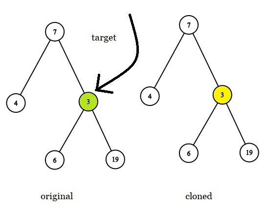
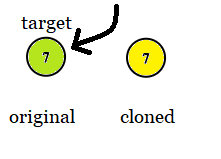
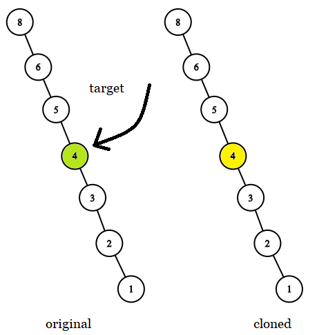

| Category | Difficulty | Likes | Dislikes |
|---|---|---|---|
| Algorithms | Easy | 1805 | 2015 |
tree | depth-first-search | breadth-first-search | binary-tree
facebook
Given two binary trees original and cloned and given a reference to a node target in the original tree.
The cloned tree is a copy of the original tree.
Return a reference to the same node in the cloned tree.
Note that you are not allowed to change any of the two trees or the target node and the answer must be a reference to a node in the cloned tree.
Example 1:

Input: tree = [7,4,3,null,null,6,19], target = 3
Output: 3
Explanation: In all examples the original and cloned trees are shown. The target node is a green node from the original tree. The answer is the yellow node from the cloned tree.Example 2:

Input: tree = [7], target = 7
Output: 7Example 3:

Input: tree = [8,null,6,null,5,null,4,null,3,null,2,null,1], target = 4
Output: 4
Constraints:
tree is in the range [1, 104].tree are unique.target node is a node from the original tree and is not null.
Follow up: Could you solve the problem if repeated values on the tree are allowed?